Sushi: The Art of Vinegared Rice

A History Spanning Centuries
Sushi as we know it today traces back to Edo-period Tokyo (1603–1868), but its roots run far deeper. The original form, narezushi, appeared in Southeast Asia as a method of preserving fish in fermented rice. By the 8th century, this technique had reached Japan, where it evolved over hundreds of years.
The transformation came in the early 19th century when Hanaya Yohei is credited with creating nigiri-zushi — hand-pressed vinegared rice topped with fresh fish — at his stall in Edo (now Tokyo). This was fast food for the bustling capital: quick, affordable, and delicious.
Cultural Significance
Sushi embodies the Japanese philosophy of harmony with nature. A great sushi chef, or itamae, trains for years — sometimes a decade — mastering rice preparation alone before being trusted with fish. The discipline reflects deeper values: patience, respect for ingredients, and the pursuit of perfection in simplicity.
Seasonality is paramount. The concept of shun (旬) — eating ingredients at their peak — means a true sushi menu changes with the calendar. Bonito in spring, eel in summer, mackerel in autumn, and yellowtail in winter.
Iconic Varieties
Nigiri-zushi (握り寿司)
The classic hand-pressed sushi. A small mound of vinegared rice topped with a slice of raw fish, sometimes brushed with soy sauce or citrus. Popular toppings include maguro (tuna), salmon, tai (sea bream), and the prized ootoro (fatty tuna belly).
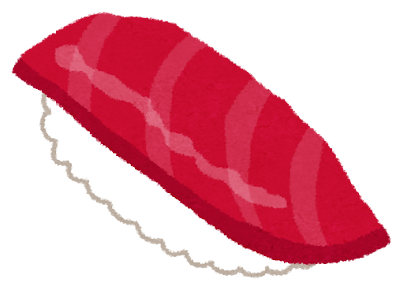
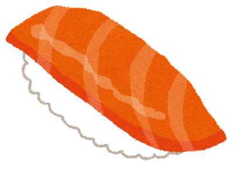
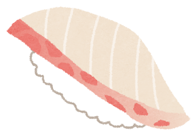
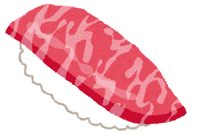
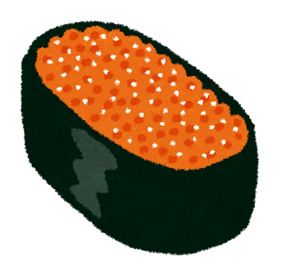
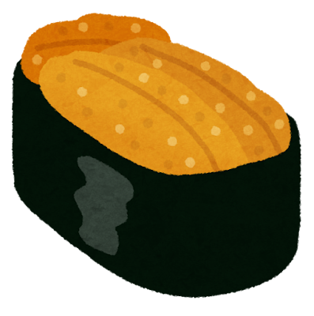
Maki-zushi (巻き寿司)
Rice and fillings rolled in seaweed. From the iron-rich tekka-maki (tuna roll) to the creamy negitoro-maki (minced fatty tuna with scallion), rolls showcase the endless creativity within simple constraints.
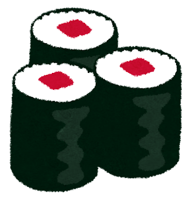
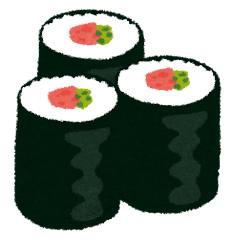
Sashimi (刺身)
While technically not sushi (there is no rice), sashimi — pristine slices of raw fish — is sushi s closest companion. The purity of the cut reveals the fish s quality with nowhere to hide.
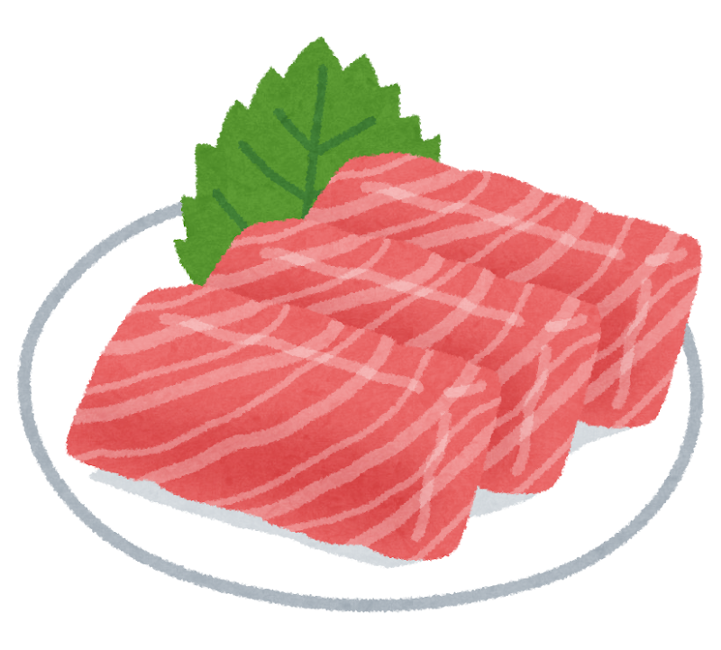
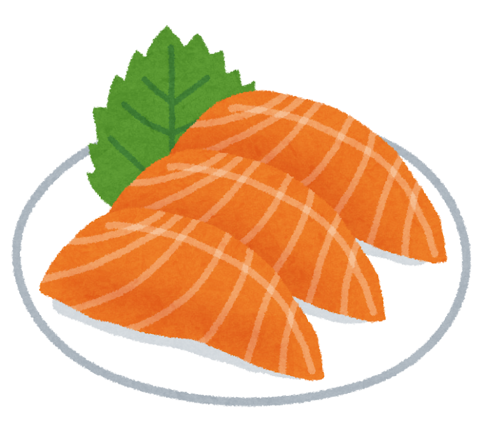
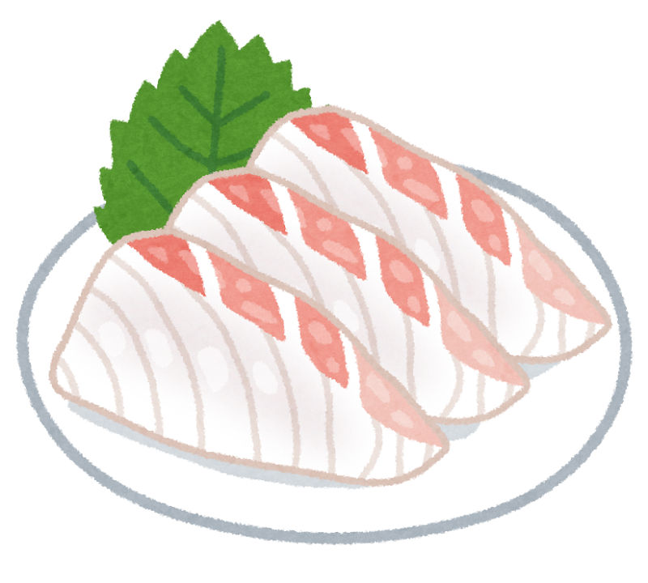
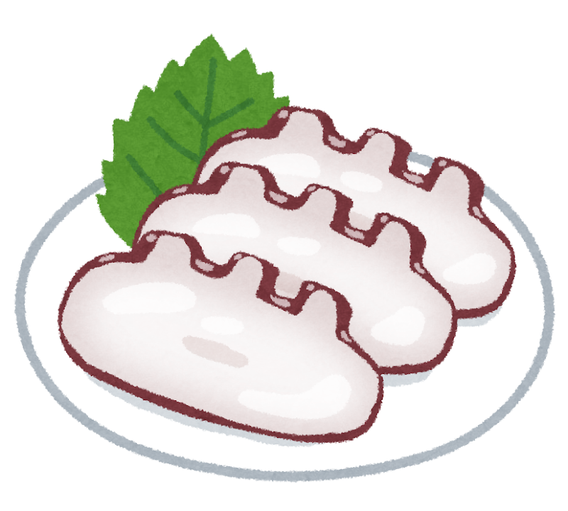
Chirashi-zushi (ちらし寿司)
A bowl of sushi rice scattered with colorful toppings — a celebration dish often served during Hinamatsuri (Girls Day) and other festivities.
In Japan, sushi is not merely food — it is a dialogue between the chef and the sea, mediated by rice and time.